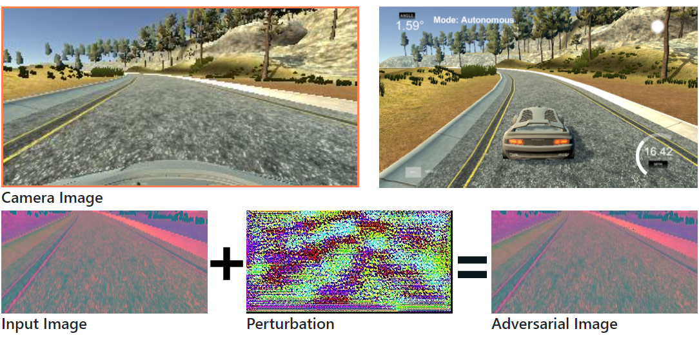

Adversarial Driving: Attacking End-to-End Autonomous Driving
Han Wu, Syed Yunas, Sareh Rowlands, Wenjie Ruan, and Johan Wahlstrom

End-to-End driving models lead to smaller systems and better performance.

The NVIDIA End-to-End Driving Model
Image classification models that use deep neural networks are vulnerable to adversarial attack.